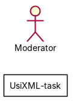
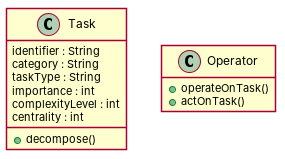

← all cases
D2/UsiXML-task — model qwen, condition B, run 1
1. Requirements (input)
R1: A task node that includes the string attributes identifier, category, and task type. This node also has integer attributes to describe the importance, complexity level and centrality of the task.
R2: An operator in some expression language.
R3: A binary operator
R4: A unary operator
R6: A node describing a task that may be decomposed on other sub-tasks.
R7: A task with an associated expression
R8: A task with an associate operator
R9: A binary operator with only one operand which is a Task
R10: A unary operator which acts over some task
2. Result 1 → Result 2 (ambiguity removal)
Red, struck-through: removed by ambiguity removal; green: added.
| classes (3 → 1) |
|---|
| Node |
| Operator |
| Task |
| attributes (4 → 1) |
|---|
| Node.centrality |
| Node.complexity level |
| Node.importance |
| Task.importance |
| Operator.importance |
| relations (1 → 0) |
|---|
| association: Operator -> Task |
3. Ambiguity tags
| id | req | type | cue | status | readings / explanation |
|---|
| A1 | R2 | quantifier | some | resolved | An operator in every expression language.; An operator in at least one expression language.
The term 'some' is ambiguous and could mean either every or at least one. |
| A2 | R6 | actor | passive 'decomposed' without agent | resolved | A node describing a task that may be decomposed by an operator.; A node describing a task that may be decomposed by another node.
The term 'decomposed' without an agent could refer to either an operator or another node. |
| A3 | R10 | quantifier | some | resolved | A unary operator which acts over every task.; A unary operator which acts over at least one task.
The term 'some' is ambiguous and could mean either every or at least one. |
4. Diagrams generated from the shared model
usecase diagram
class diagram
5. Code skeleton (Python; Java in code/java/)
"""Code skeleton generated from the shared model of D2/UsiXML-task.
Every class and method records the requirement(s) it traces to."""
from __future__ import annotations
import dataclasses as _dc
import enum as _enum
import typing as _t
@_dc.dataclass
class Task:
"""Source: R1"""
identifier: _t.Optional[str] = None
category: _t.Optional[str] = None
taskType: _t.Optional[str] = None
importance: _t.Optional[int] = None
complexityLevel: _t.Optional[int] = None
centrality: _t.Optional[int] = None
def decompose(self) -> None:
"""Operation."""
raise NotImplementedError
@_dc.dataclass
class Operator:
"""Source: R2, R3, R4, R9, R10"""
def operateOnTask(self) -> None:
"""Operation."""
raise NotImplementedError
def actOnTask(self) -> None:
"""Operation."""
raise NotImplementedError
6. Validation, checks and traceability
| python_compiles | True |
|---|
| java_compiles | True |
|---|
| attribute_mismatches | 0 |
|---|
| method_mismatches | 0 |
|---|
| use_cases | 0 |
|---|
| use_cases_without_actor | 0 |
|---|
| use_cases_without_method | 0 |
|---|
| actors_without_use_case | 1 |
|---|
| relations_to_unknown_class | 0 |
|---|
| inconsistencies | 1 |
|---|
| inconsistency_rate | 0.3333 |
|---|
| requirement_coverage | 0.6667 |
|---|
| validator fixes | |
|---|
| assumptions for open ambiguities | [] |
|---|
7. Scores against the reference
| element | P | R | F1 | TP/FP/FN |
|---|
| classes | 1.0 | 0.286 | 0.444 | 2/0/5 |
| attributes | 0.833 | 0.294 | 0.435 | 5/1/12 |
| relations | 0.0 | 0.0 | 0.0 | 0/0/6 |
| relations_strict | 0.0 | 0.0 | 0.0 | 0/0/6 |